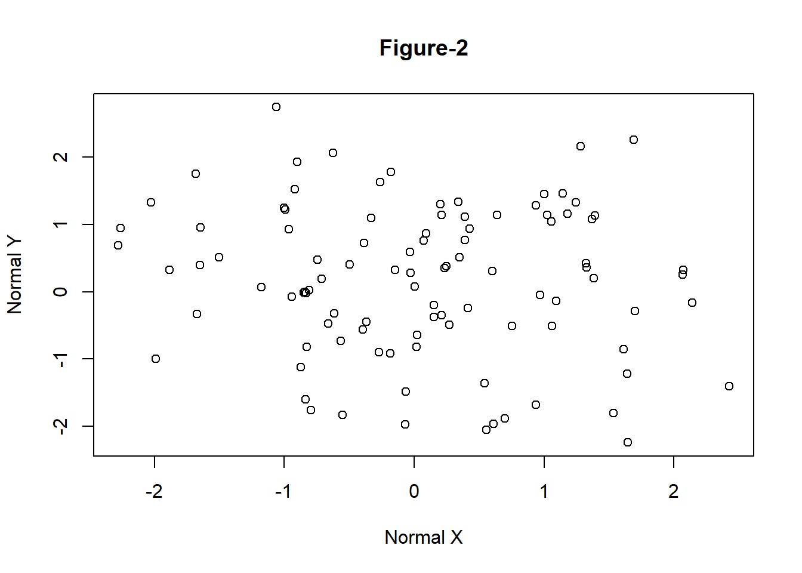
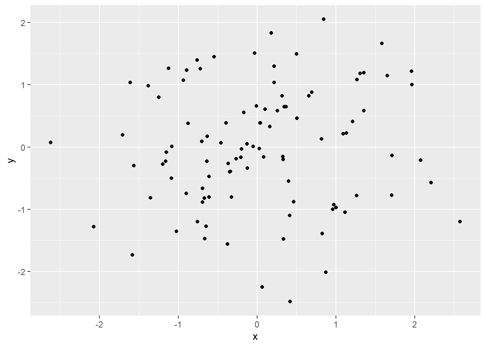

# Generate two random normal vectors
x = rnorm(100)
y = rnorm(100)
# plot x and y using the plot() function
plot(x, y)Topik 5 Grafik pada R I
5.1 Dasar Plot di R
5.1.1 Scatter Plot
One of the most popular and most frequently used functions to build a new plot in R is the plot function. Plot is a high level generic graphic function which depen
args(plot.default)function (x, y = NULL, type = "p", xlim = NULL, ylim = NULL,
log = "", main = NULL, sub = NULL, xlab = NULL, ylab = NULL,
ann = par("ann"), axes = TRUE, frame.plot = axes, panel.first = NULL,
panel.last = NULL, asp = NA, xgap.axis = NA, ygap.axis = NA,
...)
NULLplot(x, y, main = "Figure-2", xlab = "Normal X", ylab = "Normal Y")
5.1.2 Line Plot
One of the most popular and most frequently used functions to build a new plot in R is the
# change the working directory to the folder containing data_fin.csv or provide
# the full path with the filename
load("data/data_fin.RData")
# column names
colnames(FinData) [1] "Date" "DJI" "AXP" "MMM" "ATT" "BA" "CAT" "CISCO" "DD"
[10] "XOM" "GE" "GS" "HD" "IBM" "INTC" "JNJ" "JPM" "MRK"
[19] "MCD" "MSFT" "NKE" # plot a line plot for Dow Jones stock index prices
plot(FinData$MSFT, type = "l", main = "Microsoft Prices", ylab = "Prices")
library(zoo)
# convert data to class zoo
FinData.ts = zoo(FinData[, 2:5], order.by = FinData$Date)
# plot multiple stacked plot
plot(FinData.ts, col = gray.colors(4)) #figure-4
5.1.3 Bar Plot
One of the most popular and most frequently used
load("data/GDP_Yearly.RData")
par1 = par()
par(ask = F)
barplot(height = GDP$Australia, names.arg = GDP$Year, ylab = "GDP Per Capita") #figure-5# convert data to matrix
data = as.matrix(GDP[, 2:12])
# create row names
rownames(data) = GDP$Year
# plot a stacked bar plot with legend showing the years
barplot(height = data[1:5, ], beside = FALSE, col = rainbow(5), legend = rownames(data[1:5,
]), args.legend = list(x = "top", horiz = TRUE, inset = -0.1), cex.names = 0.6)
par(par1)5.1.4 Pie Chart
One of the most popular and most frequently used
pie(x = data[1, ], labels = colnames(data))
5.1.5 Scatter Plot
One of the most popular and most frequently used
pairs(data[, 1:5])pairs(~Australia + UK + USA, data = data)
5.2 Grafik Parameter di R
One of the most popular and most frequently used functions to build a new plot in R is the plot function. Plot is a high level generic graphic function which depen
# first save the default parameters
par.old = par()
# change the margins
par(mar = c(5, 4, 7, 2))
# plot the bargraph
barplot(height = data[1:5, ], beside = FALSE, col = rainbow(5), legend = rownames(data[1:5,
]), args.legend = list(x = "top", horiz = TRUE, inset = -0.1), cex.names = 0.6)
title("Bar Plot \n(with custom margins)")# set parameters to default
par(par.old)# first save the default parameters
par.old = par()
# creat a 2X2 grid
par(mfrow = c(2, 2))
# scatterplot
plot(x, y, xlab = "Normal X", ylab = "Normal Y")
# time series plot
plot(FinData.ts[, 1])
# bar plot
barplot(height = GDP$Australia, names.arg = GDP$Year, ylab = "GDP Per Capita (Australia)")
# pie chart
pie(x = data[1:11, 1], labels = rownames(data[1:11, ]))# set parameters to default
par(par.old)5.3 Pengenalan ggplot2
5.3.1 qplot
One of the most popular and most frequently used functions to build a new plot in R is the plot function. Plot is a high level generic graphic function which depen
x = rnorm(100)
y = rnorm(100)
# load the library
library(ggplot2)
# simple scatterplot using qplot
qplot(x, y)
load("data/data_fin.RData")
# line plot using qplot
qplot(x = FinData$Date, y = FinData$DJI, geom = "line", xlab = "Dates", ylab = "Prices",
main = "DJIA Price Timeseries")
5.3.2 Layered grafik dengan ggplot
One of the most popular and most frequently used functions to build a new plot in R is the
# Read 'long' format data
load("data/GDP_l.RData")
# data snapshot
head(GDP_l) Year Country GDP
1 1990 Australia 18247.39
2 1991 Australia 18837.19
3 1992 Australia 18599.00
4 1993 Australia 17658.08
5 1994 Australia 18080.70
6 1995 Australia 20375.30# creating the aesthetics using ggplot
p1 = ggplot(GDP_l, aes(Country, GDP, fill = Year))# figure
p1 + geom_bar(stat = "identity")# change the aesthetics to show time on X-axis and GDP values on Y-axis the
# colour line fill be according to the country
p2 = ggplot(GDP_l, aes(Year, GDP, colour = Country, group = Country))
p2 + geom_line()# change the aesthetics to show time on X-axis and GDP values on Y-axis the
# colour line fill be according to the country
p2 = ggplot(GDP_l, aes(Year, GDP, colour = Country, group = Country))
p2 + geom_line() + facet_grid(Country ~ .)
5.3.2 Menyusun plot menggunakan gridExtra
One of the most popular and most frequently used functions to build a new plot in R is the
p1.1 = ggplot(GDP_l, aes(x = Year, y = GDP))
p2.1 = p1.1 + geom_bar(aes(fill = Country), stat = "identity", position = "dodge")p1.2 = ggplot(GDP_l[GDP_l$Country %in% c("Australia", "UK", "USA"), ], aes(Year,
GDP))
p2.2 = p1.2 + geom_col(aes(fill = Country)) + labs(title = "GDP for Aus, US and UK") #using labs to modify title
p2.2p1.3 = ggplot(FinData, aes(x = Date, y = DJI))
p2.3 = p1.3 + geom_path(colour = "darkblue") + geom_smooth(colour = "black") + theme_linedraw() #changing theme
p2.3library(gridExtra)
fig1 = grid.arrange(p2.1, p2.2, p2.3, nrow = 3, heights = c(20, 12, 12), top = "Combined plots in three rows")
ggsave(filename = "combined_plot.pdf", plot = fig1)